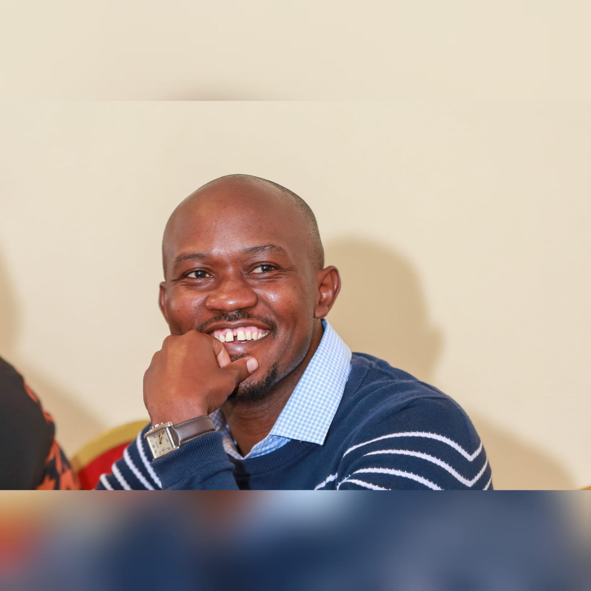
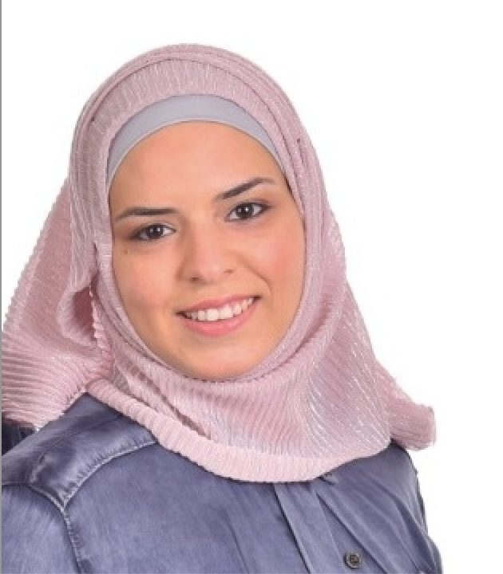
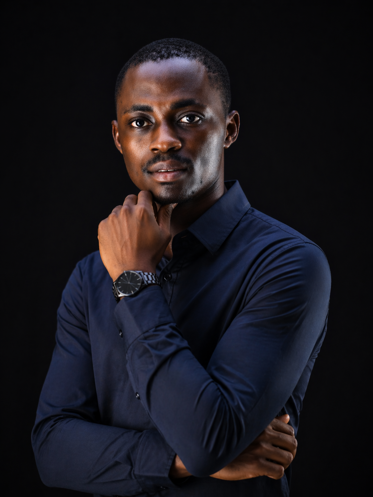

Leadership with Purpose
Constantnople Enterprise is led by a founder whose background uniquely bridges finance, technology, and environmental stewardship.

Boniface Wainaina
Founder & Chief ExecutiveBoniface holds a Bachelor's degree in Purchasing and Supplies Management and a CPA qualification, with professional experience in accounting, business development, and technology-driven ventures. Through his involvement in water resource management and environmental initiatives, he developed a deep passion for creating solutions that improve livelihoods while protecting natural ecosystems.
He leads the company's strategy, innovation, and partnerships — driving the vision of a climate-smart aquaculture sector that empowers fish farmers across Africa through durable HDPE technology and intelligent monitoring systems.
The Experts Behind Our Innovation
Boniface works alongside a multidisciplinary team with diverse expertise spanning finance, technology, consulting, and communications — all united by a shared mission.
Joseph Kariuki
Brings certified public accounting expertise to ensure rigorous financial governance, reporting, and investor-ready business planning across all company operations.
Sophia Katerinis
Provides strategic consulting to guide product positioning, market entry, and stakeholder engagement — helping shape the commercial direction of the company.

Ghina Ajour
Leads the design and development of Constantnople's digital presence, building the platforms and interfaces through which farmers and partners engage with the brand.

Kazeem Oluwaseyi
Develops and maintains Constantnople's digital platforms — delivering a fast, modern, and accessible web experience for farmers and partners across Africa.
Daniel Atkinson
Specialises in identifying and securing funding opportunities through grant writing, connecting Constantnople with development organisations and impact investors.
Felix Nyabuto
Leads the development and integration of IoT sensor systems — building the real-time data collection and monitoring intelligence at the heart of our aquaculture platform.
Our Shared Values
Across disciplines and roles, every member of the Constantnople team is driven by the same core principles.
Sustainable Innovation
We build solutions that are durable, environmentally responsible, and designed to create lasting impact — not short-term fixes.
Farmer-First Thinking
Every decision starts with the farmer. We listen, learn from early adopters, and build solutions that solve real problems in the field.
Environmental Responsibility
We believe that protecting aquatic ecosystems is not optional — it is essential to the long-term viability of the aquaculture industry we serve.
What Does Constantnople Mean?
The name Constantnople Enterprise symbolises strength, resilience, and strategic growth. Historically, Constantinople was known as a centre of trade, innovation, and connection between regions — a crossroads of ideas, commerce, and progress.
Similarly, our company aims to become a hub of innovation in sustainable technologies — connecting modern engineering solutions with industries such as aquaculture, environmental management, and the circular economy. The name reflects our ambition to build solutions that are durable, impactful, and transformative for generations to come.
Ready to Work With Us?
Whether you are a fish farmer, investor, research institution, or development organisation — we would love to connect. Together, we can build a smarter, more resilient, and more sustainable blue economy.